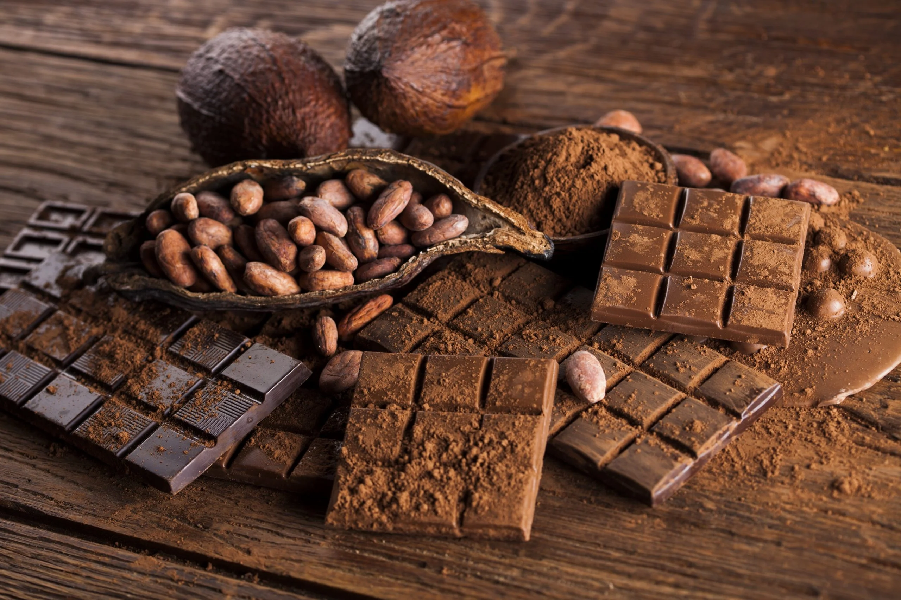
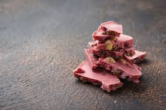
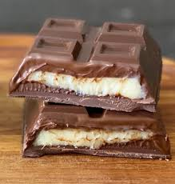

Explore os sabores do chocolate!
O chocolate é uma das paixões mais antigas da humanidade. Conheça os diferentes tipos, suas curiosidades e mergulhe nesse universo delicioso e fascinante.
Descubra mais
Tipos de Chocolate
Existem diversos tipos de chocolate, cada um com características únicas de sabor, aroma e textura. Abaixo, conheça os principais:
- Chocolate ao Leite: Contém entre 25% e 40% de cacau, além de leite em pó ou leite condensado. É doce, cremoso e o mais popular no mundo.
- Chocolate Amargo: Possui alto teor de cacau (acima de 50%) e pouco ou nenhum açúcar. É mais saudável e intenso no sabor.
- Chocolate Meio Amargo: Um intermediário entre o ao leite e o amargo, geralmente com 40% a 55% de cacau.
- Chocolate Branco: Feito com manteiga de cacau, açúcar e leite. Não contém massa de cacau, por isso tem sabor mais doce e textura suave.
- Chocolate Ruby: Descoberto em 2017, é naturalmente rosa e tem sabor levemente frutado, sem corantes ou aromatizantes.
- Chocolate Vegano: Produzido sem ingredientes de origem animal, normalmente com leites vegetais e açúcar de coco ou adoçantes naturais.
- Chocolate com Recheio: Pode conter caramelo, trufas, licor, frutas, cremes ou castanhas. São populares em bombons e ovos de Páscoa.
- Chocolate Funcional: Enriquecido com ingredientes como colágeno, whey protein, fibras ou probióticos. Indicado para públicos específicos.
Curiosidades sobre o Chocolate
- O chocolate era considerado sagrado pelos Maias e Astecas, usado em rituais e como moeda.
- O nome “chocolate” vem da palavra náuatle *xocolatl*, que significa “água amarga”.
- O Dia Mundial do Chocolate é comemorado em 7 de julho.
- O chocolate amargo, com mais de 70% de cacau, é rico em antioxidantes e pode fazer bem ao coração.
- A Suíça é um dos países com maior consumo per capita de chocolate no mundo.
- O cacau cresce em regiões tropicais e precisa de sombra e umidade constante para se desenvolver.
Galeria de Chocolates




.jpg)
